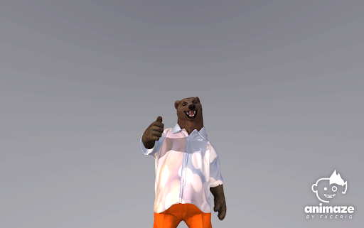

新しいテクスチャーが真っ黒になっています
大きなテクスチャーや、たくさんの小さなテクスチャーを連続してアップロードした場合、Open GLでOut of Videoエラーが発生する場合があります。以下の画像のように、アップロードしたテクスチャーが黒くなっている場合、このエラーが発生している可能性があります。

エラーが発生した場合、新しいテクスチャーを適用したアバターを保存し、アプリを再起動します。アプリの再起動後、設定したテクスチャーが適用されたアバターが表示されます。
